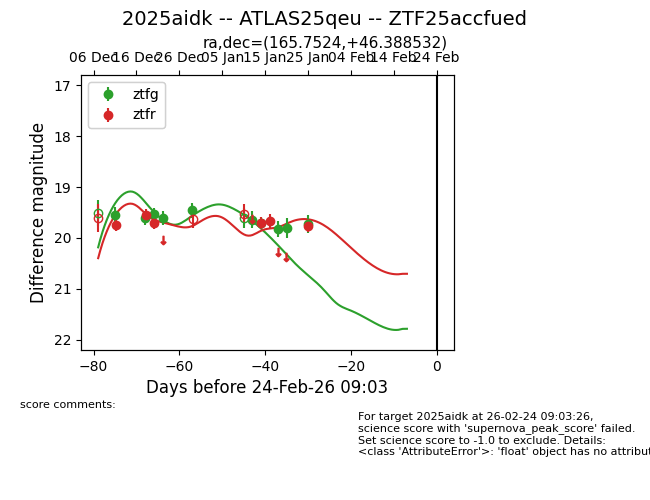
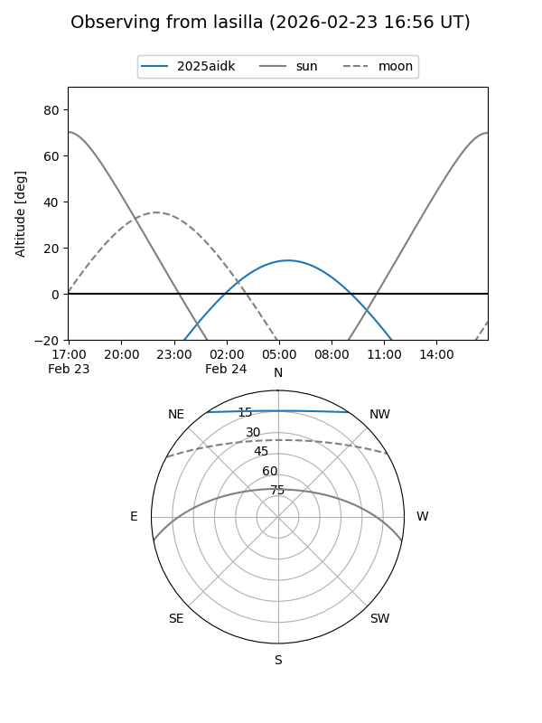
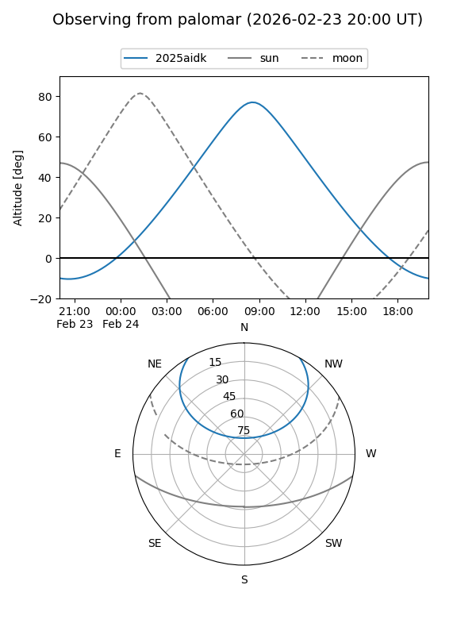
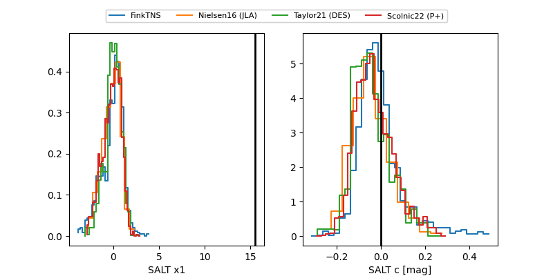

2025aidk
Target 2025aidk at 2026-01-22 07:41
Aliases and brokers:
FINK: link
Lasair: link
ALeRCE: link
TNS: link
YSE: link
alt names
ZTF25accfued (ztf,fink_ztf)
2025aidk (tns,yse)
ATLAS25qeu (atlas)
Coordinates:
equatorial (ra, dec) = 165.7524,+46.38853
equatorial (HMS+DMS) = 11:03:00.58,+46:23:18.71
galactic (l, b) = (163.7090,+61.23478)
Flags:
Photometry:
last ztfg=19.83, ztfr=19.68
8 ztfg, 5 ztfr detections
Lightcurve

Visibility


Additional plots
